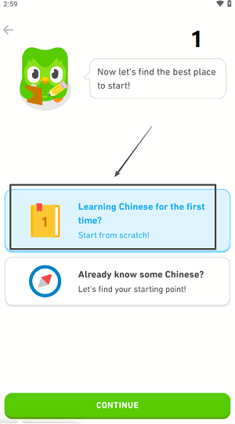
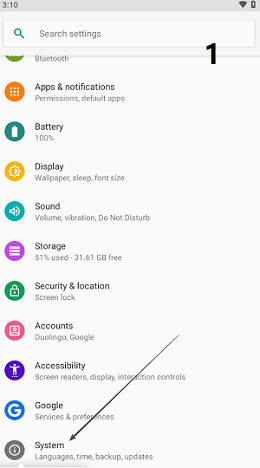
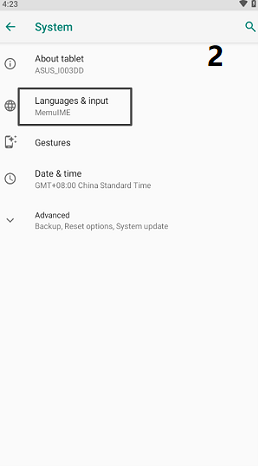
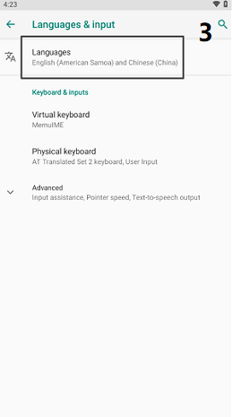
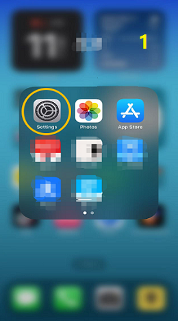
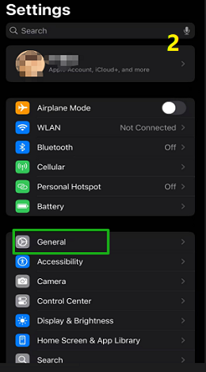
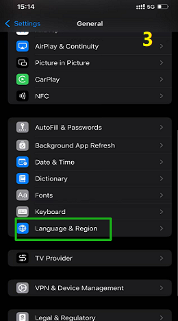
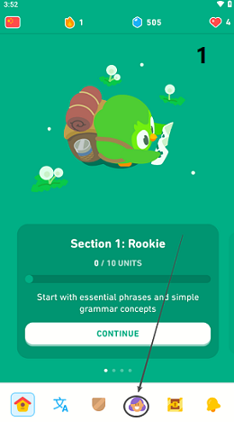
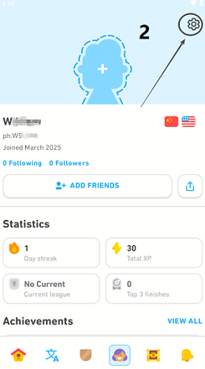
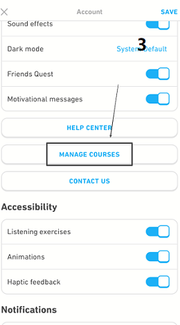

如何在 Duolingo 上開始學習一門新語言
Duolingo 是一款非常強大的語言學習工具，支持多種不同類型的語言學習。我們將通過本博客了解以下內容：
- 如何在 Duolingo 上開始新的語言學習？
- 關於切換App界面語言。
- 刪除現有的語言學習課程。
- 為什麼要使用 Duolingo？如何以每月 3.84 美元的價格訂閱 Duolingo？
- Duolingo 支持的語言列表 2025。
如何切換Duolingo學習的目標語言
- 首先，我們初次進入Duolingo時，需要選擇一種要學習的語言，這裡我們以"中文"為例。
- 然後我們需要做一個單元測試，這個過程不會很長，大概15個基本問題。
- 完成一些基礎的測試之後，我們就要正式進入語言學習計劃了。
- 這時選擇左上角的語言課程按鈕，可以切換到其他語言進行學習。
如何切換 Duolingo App 的語言
- Duolingo App的界面語言會根據用戶手機的系統語言自動識別。
- 我們需要更改用戶手機的操作系統語言。
- 然後重新啟動程序，它就會自動切換到你想要的語言界面。
Android系統語言切換方法
[步驟] ：設置->系統->語言和輸入->語言
  - 通過手機設置進入設置菜單。
- 在系統設置中，找到 語言和輸入 選項。
- 你可以在這裡修改系統語言。
- 重新啟動 Duolingo 以重新加載。
iOS系統語言切換方法
[步驟] ：設置->常規->語言和地區
  - 首先找到IOS系統裡的設置。
- 然後在菜單中找到 【常規】 。
- 在菜單列表中，找到 [語言和地區] 。
- 你可以在這裡修改IOS的系統語言。
- 然後重啟Duolingo即可修改App界面語言。
如何刪除 Duolingo 中的語言課程
  - 首先我們進入Duolingo的主界面，選擇個人資料。
- 選擇右上角的設置，在菜單列表中找到 【管理課程】 。
- 你可以在這裡直接刪除你不想學習的語言課程。

注意：刪除課程後，你將無法恢復該課程，並且所有學習進度都將丟失。請謹慎操作。
為什麼要使用 Duolingo？
1.適合初學者
Duolingo可以根據用戶對外語的掌握程度提供不同的學習路線，循序漸進的學習模式，讓初學者更好地掌握基礎知識，同時又不會給初學者帶來過大的學習壓力，導致他們放棄語言學習。
2. 大部分功能免費
作為全球最受歡迎的語言學習工具之一，你可以免費學習多種語言課程。當然，如果你想獲得更多功能，則需要訂閱。
| 類型 | 價格 | 描述 |
|---|---|---|
| 基本計劃(免費) | 0美元 | 包含廣告、有限的練習課程 |
| 超級多鄰國 | 每月 12.99 美元 & 每年 83.99 美元 | 無廣告、無限練習、離線下載、僅限單用戶 |
| Duolingo 家庭計劃 | 每月 9.99 美元 | 支持最多 6 個帳戶，非常適合共享 |
| Duolingo 共享帳戶 | 每月 9 元（RMB） | 環球巴士 共共享帳戶(非官方) |

筆記：
- Duolingo超級帳戶支持14天免費試用。
- 環球巴士共享帳戶訂閱Duolingo會更便宜。
- 具體價格會根據不同地區而有所不同。
3.通過動畫、遊戲等引導學習。
它會為用戶當天準備學習任務，通過等級和積分獎勵模式提高學習積極性，讓語言學習逐漸成為一種生活習慣。
4. 根據掌握程度調整課程內容和難度
根據學習進度和語言掌握情況調整練習策略，支持離線學習，可以下載課程到本地進行學習，同時提供發音和聽力練習。
Duolingo 支持的語言(2025 種)
| 類別 | 語言 | 描述 |
|---|---|---|
| 歐洲語言(拉丁語和日耳曼語) | 英語 | 適用於非英語母語人士 |
| 西班牙語(Español) | ||
| 法語(Français) | ||
| 意大利語(Italiano) | ||
| 葡萄牙語(Português) | ||
| 德語(Deutsch) | ||
| 荷蘭語(Nederlands) | ||
| 瑞典語(Svenska) | ||
| 丹麥語(Dansk) | ||
| 挪威語(Norsk) | ||
| 亞洲語言 | 普通話 (中文) | 注重拼音，無需練習書寫 |
| 日語(日本語) | 支持平假名、片假名和一些漢字 | |
| 韓語 (한국어) | 基於韓文的學習 | |
| 印地語 | ||
| 印尼語(Bahasa Indonesia) | ||
| 越南語(Tiếng Việt) | ||
| 泰國 | ||
| 斯拉夫語(東歐和俄羅斯) | 俄語 | |
| 拋光 | ||
| 捷克語 | ||
| 烏克蘭 | ||
| 土耳其 | ||
| 阿拉伯 | ||
| 希伯來語 | ||
| 斯瓦希里語 | ||
| 濕危語言和少數民族語言 | ||
| 歐洲濕危語言 | 愛爾蘭語(蓋爾語) | 愛爾蘭 |
| 威爾士語(Cymraeg) | 英國威爾士 | |
| 蘇格蘭蓋爾語(Gàidhlig) | 蘇格蘭 | |
| 美洲原住民語言 | 納瓦霍語(Diné Bizaad) | 美洲原住民語言(美國) |
| 夏威夷語(ʻŌlelo Hawaiʻi) | ||
| 人工語言(由人類構建) | 世界語 | 19世紀創造的一種國際輔助語言 |
| 克林貢人 | 來自《星際迷航》 | |
| 高等瓦雷利亞語 | 出自《權力的遊戲》 |
Duolingo 支持 30 多種不同的語言。
提供歐洲、亞洲、歐洲稀有語言和人工語言的學習內容。
支持多種語言學習路徑，學習過程中互動性強。